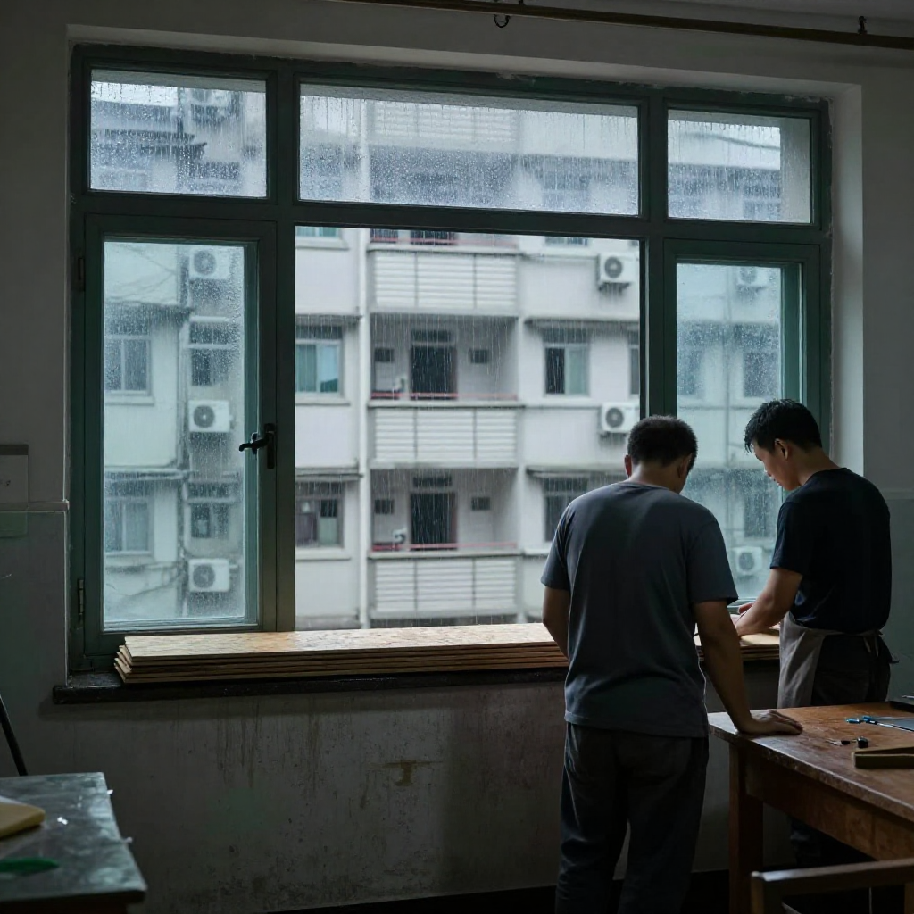
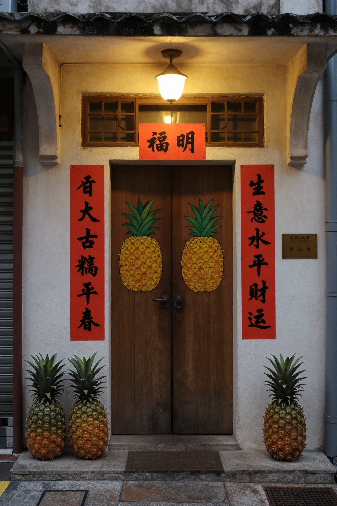
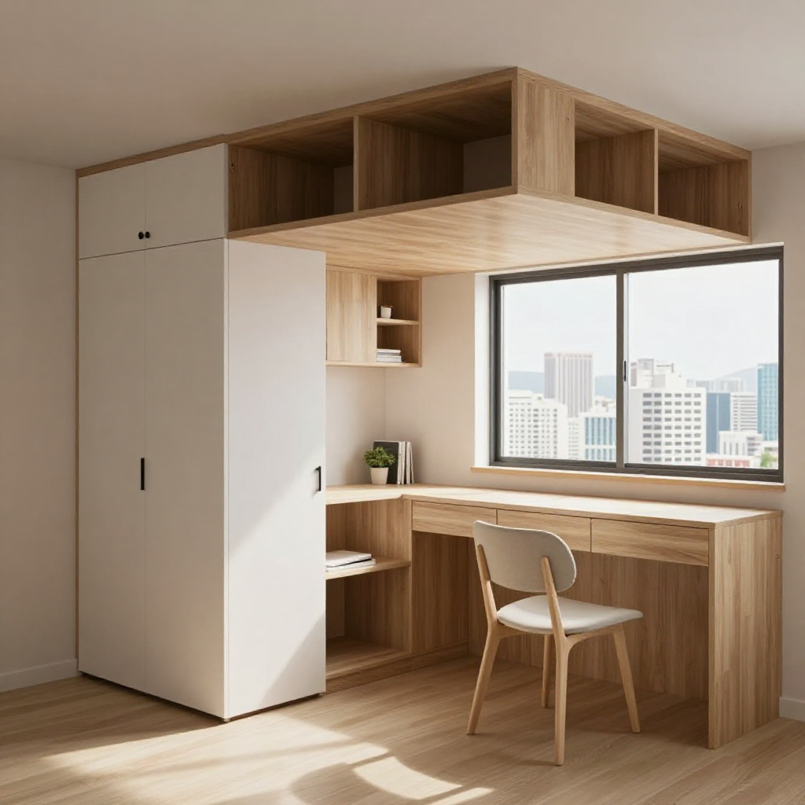
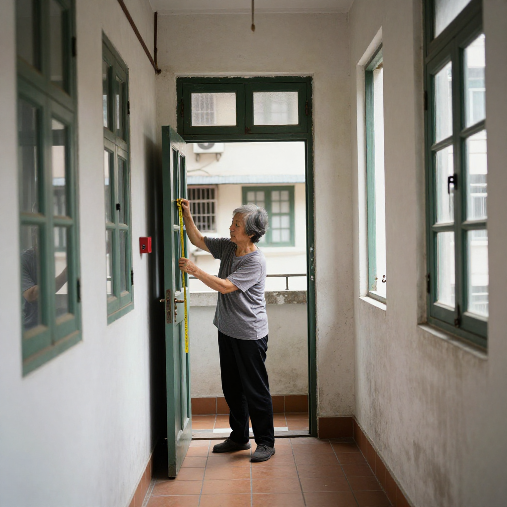
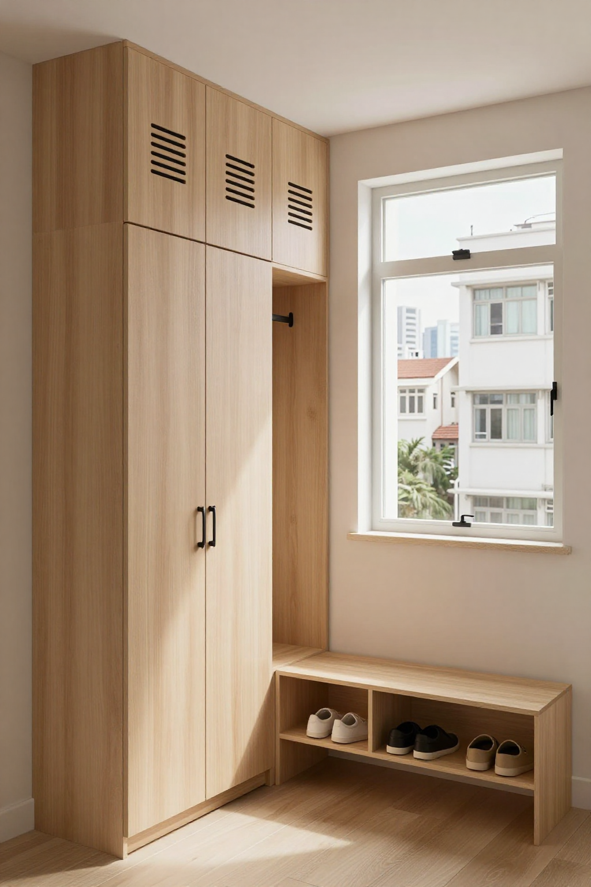

📺 YouTube 同步 · 博主講古 29 篇
張丹楓、雲蕾嘅香港全屋定制故事 YouTube 版。每張卡附影片標題、描述、hashtag、封面圖連結。半自動：助手生成草稿，海哥手動上傳。
29
影片草稿
16:9
封面尺寸
香港
目標觀眾
半自動
上傳模式

NEW
NEW唐樓入伙前的最后一晚：旺角砵蘭街380呎，菠萝旺同周家兩年儲起嘅首期
旺角砵蘭街唐樓，業主姓周、太太姓陳，一家四口380呎儲咗十二年首期。張丹楓主講、雲蕾設計：油煙不鏽鋼蛇嘴、地台承重800公斤、磨砂玻璃鋁框分床、收尾口碑論。
NEW
東涌公屋混凝土檢查之後：阿強師傅同阿杰講解結構、裂縫與全屋定制嘅底線
東涌第42區公屋第3至5座混凝土方塊抗壓測試異常後，明報、星島、結構工程師倪學仁齊齊拆局。張丹楓主講、雲蕾整理：阿杰驗樓三招、0.3mm裂縫處理、報價單防水層唔可以漏。

300呎偷出三房：張丹楓接納米樓訂造訂單全屋定制攻略
觀塘280呎納米樓，黄生雨公婆加小朋友要三間房。張丹楓主講、雲蕾設計、陳永強師傅同行：上床下櫃、半開放式趟門書房、乾濕分離廁所、偷位收納設計。

等施政報告之前先把家裝好：張丹楓教你北角舊樓收納與通風規劃
北角三百呎唐樓收納通風規劃，張丹楓主講、雲蕾設計：老公想滿牆櫃vs媽咪話櫃太多會焗、懸空薄身鞋櫃連機器人位、廚房防潮板材、預算三層分配。

五年規劃落地第二日：北角300呎舊單位，阿May一家先把收納通風搞掂
9月16日首份五年規劃公布、9月17日特首立法會答問會同一日，北角三百幾呎舊單位業主阿May問追唔追新政策裝修。櫃到頂唔貼死、廚房耐潮板、玄關薄身懸空櫃。

紅磡357呎兩房：淺木櫃唔係油白色就得，張丹楓教你揀啱色耐睇十年
紅磡357呎實用兩房，阿Yan阿樂以為全屋油白色顯大。淺木暖色一樣拉高亮度仲耐污，吊櫃到頂封死角、趟門慳一呎、背板離牆3mm防潮。

粉嶺鳳凰嶺邨開門見廁點算？張丹楓3.5萬半日裝完430呎3-4人單位
粉嶺鳳凰嶺邨新公屋入伙，430呎3-4人單位開門見廁、細房太細。暗門化解、卡座廳房合一、地台床上床下櫃，3.5萬工廠預製半日裝完。